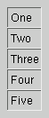

QBoxLayout Class Reference
The QBoxLayout class lines up child widgets horizontally or
vertically.
More...
#include <qlayout.h>
Inherits QLayout.
Inherited by QHBoxLayout and QVBoxLayout.
List of all member functions.
Public Members
- enum Direction { LeftToRight, RightToLeft, TopToBottom, BottomToTop, Down = TopToBottom, Up = BottomToTop }
- QBoxLayout ( QWidget * parent, Direction d, int margin = 0, int spacing = -1, const char * name = 0 )
- QBoxLayout ( QLayout * parentLayout, Direction d, int spacing = -1, const char * name = 0 )
- QBoxLayout ( Direction d, int spacing = -1, const char * name = 0 )
- ~QBoxLayout ()
- virtual void addItem ( QLayoutItem * item )
- Direction direction () const
- void setDirection ( Direction direction )
- void addSpacing ( int size )
- void addStretch ( int stretch = 0 )
- void addWidget ( QWidget * widget, int stretch = 0, int alignment = 0 )
- void addLayout ( QLayout * layout, int stretch = 0 )
- void addStrut ( int size )
- void insertSpacing ( int index, int size )
- void insertStretch ( int index, int stretch = 0 )
- void insertWidget ( int index, QWidget * widget, int stretch = 0, int alignment = 0 )
- void insertLayout ( int index, QLayout * layout, int stretch = 0 )
- bool setStretchFactor ( QWidget * w, int stretch )
- bool setStretchFactor ( QLayout * l, int stretch )
- virtual QSize sizeHint () const
- virtual QSize minimumSize () const
- virtual QSize maximumSize () const
- virtual bool hasHeightForWidth () const
- virtual int heightForWidth ( int w ) const
- virtual QSizePolicy::ExpandData expanding () const
- virtual void invalidate ()
- virtual void setGeometry ( const QRect & r )
- int findWidget ( QWidget * w )
Protected Members
Detailed Description
The QBoxLayout class lines up child widgets horizontally or
vertically.
QBoxLayout takes the space it gets (from its parent layout or from
the mainWidget()), divides it up into a row of boxes, and makes
each managed widget fill one box.

If the QBoxLayout's orientation is Horizontal the boxes are
placed in a row, with suitable sizes. Each widget (or other box)
will get at least its minimum size and at most its maximum size.
Any excess space is shared according to the stretch factors (more
about that below).

If the QBoxLayout's orientation is Vertical, the boxes are
placed in a column, again with suitable sizes.
The easiest way to create a QBoxLayout is to use one of the
convenience classes, e.g. QHBoxLayout (for Horizontal boxes) or
QVBoxLayout (for Vertical boxes). You can also use the
QBoxLayout constructor directly, specifying its direction as LeftToRight, Down, RightToLeft or Up.
If the QBoxLayout is not the top-level layout (i.e. it is not
managing all of the widget's area and children), you must add it
to its parent layout before you can do anything with it. The
normal way to add a layout is by calling
parentLayout->addLayout().
Once you have done this, you can add boxes to the QBoxLayout using
one of four functions:
- addWidget() to add a widget to the QBoxLayout and set the
widget's stretch factor. (The stretch factor is along the row of
boxes.)
- addSpacing() to create an empty box; this is one of the
functions you use to create nice and spacious dialogs. See below
for ways to set margins.
- addStretch() to create an empty, stretchable box.
- addLayout() to add a box containing another QLayout to the row
and set that layout's stretch factor.
Use insertWidget(), insertSpacing(), insertStretch() or
insertLayout() to insert a box at a specified position in the
layout.
QBoxLayout also includes two margin widths:
- setMargin() sets the width of the outer border. This is the width
of the reserved space along each of the QBoxLayout's four sides.
- setSpacing() sets the width between neighboring boxes. (You
can use addSpacing() to get more space at a particular spot.)
The margin defaults to 0. The spacing defaults to the same as the
margin width for a top-level layout, or to the same as the parent
layout. Both are parameters to the constructor.
To remove a widget from a layout, call remove(). Calling
QWidget::hide() on a widget also effectively removes the widget
from the layout until QWidget::show() is called.
You will almost always want to use QVBoxLayout and QHBoxLayout
rather than QBoxLayout because of their convenient constructors.
See also QGrid, Layout Overview, Widget Appearance and Style, and Layout Management.
Member Type Documentation
QBoxLayout::Direction
This type is used to determine the direction of a box layout.
- QBoxLayout::LeftToRight - Horizontal, from left to right
- QBoxLayout::RightToLeft - Horizontal, from right to left
- QBoxLayout::TopToBottom - Vertical, from top to bottom
- QBoxLayout::Down - The same as TopToBottom
- QBoxLayout::BottomToTop - Vertical, from bottom to top
- QBoxLayout::Up - The same as BottomToTop
Member Function Documentation
QBoxLayout::QBoxLayout ( QWidget * parent, Direction d, int margin = 0, int spacing = -1, const char * name = 0 )
Constructs a new QBoxLayout with direction d and main widget parent. parent may not be 0.
The margin is the number of pixels between the edge of the
widget and its managed children. The spacing is the default
number of pixels between neighboring children. If spacing is -1
the value of margin is used for spacing.
name is the internal object name.
See also direction().
QBoxLayout::QBoxLayout ( QLayout * parentLayout, Direction d, int spacing = -1, const char * name = 0 )
Constructs a new QBoxLayout called name, with direction d,
and inserts it into parentLayout.
The spacing is the default number of pixels between neighboring
children. If spacing is -1, the layout will inherit its
parent's spacing().
QBoxLayout::QBoxLayout ( Direction d, int spacing = -1, const char * name = 0 )
Constructs a new QBoxLayout called name, with direction d.
If spacing is -1, the layout will inherit its parent's
spacing(); otherwise spacing is used.
You must insert this box into another layout.
QBoxLayout::~QBoxLayout ()
Destroys this box layout.
The layout's widgets aren't destroyed.
void QBoxLayout::addItem ( QLayoutItem * item ) [virtual]
Adds item to the end of this box layout.
Examples: chart/optionsform.cpp and chart/setdataform.cpp.
Reimplemented from QLayout.
void QBoxLayout::addLayout ( QLayout * layout, int stretch = 0 )
Adds layout to the end of the box, with serial stretch factor
stretch.
When a layout is constructed with another layout as its parent,
you don't need to call addLayout(); the child layout is
automatically added to the parent layout as it is constructed.
See also insertLayout(), setAutoAdd(), addWidget(), and addSpacing().
Examples: chart/optionsform.cpp, chart/setdataform.cpp, fonts/simple-qfont-demo/viewer.cpp, listbox/listbox.cpp, regexptester/regexptester.cpp, and tictac/tictac.cpp.
void QBoxLayout::addSpacing ( int size )
Adds a non-stretchable space with size size to the end of this
box layout. QBoxLayout provides default margin and spacing. This
function adds additional space.
See also insertSpacing() and addStretch().
Example: listbox/listbox.cpp.
void QBoxLayout::addStretch ( int stretch = 0 )
Adds a stretchable space with zero minimum size and stretch factor
stretch to the end of this box layout.
See also addSpacing().
Examples: layout/layout.cpp, listbox/listbox.cpp, regexptester/regexptester.cpp, and t13/gamebrd.cpp.
void QBoxLayout::addStrut ( int size )
Limits the perpendicular dimension of the box (e.g. height if the
box is LeftToRight) to a minimum of size. Other constraints may
increase the limit.
void QBoxLayout::addWidget ( QWidget * widget, int stretch = 0, int alignment = 0 )
Adds widget to the end of this box layout, with a stretch factor of stretch and alignment alignment.
The stretch factor applies only in the direction of the QBoxLayout, and is relative to the other boxes and
widgets in this QBoxLayout. Widgets and boxes with higher stretch
factors grow more.
If the stretch factor is 0 and nothing else in the QBoxLayout has
a stretch factor greater than zero, the space is distributed
according to the QWidget:sizePolicy() of each widget that's
involved.
Alignment is specified by alignment which is a bitwise OR of Qt::AlignmentFlags values. The default alignment is 0, which means
that the widget fills the entire cell.
From Qt 3.0, the alignment parameter is interpreted more
aggressively than in previous versions of Qt. A non-default
alignment now indicates that the widget should not grow to fill
the available space, but should be sized according to sizeHint().
See also insertWidget(), setAutoAdd(), addLayout(), and addSpacing().
Examples: chart/optionsform.cpp, checklists/checklists.cpp, layout/layout.cpp, lineedits/lineedits.cpp, listbox/listbox.cpp, t13/gamebrd.cpp, and t13/lcdrange.cpp.
Direction QBoxLayout::direction () const
Returns the direction of the box. addWidget() and addSpacing()
work in this direction; the stretch stretches in this direction.
See also QBoxLayout::Direction, addWidget(), and addSpacing().
Returns whether this layout can make use of more space than
sizeHint(). A value of Vertical or Horizontal means that it wants
to grow in only one dimension, whereas BothDirections means that
it wants to grow in both dimensions.
Reimplemented from QLayout.
int QBoxLayout::findWidget ( QWidget * w )
Searches for widget w in this layout (not including child
layouts).
Returns the index of w, or -1 if w is not found.
bool QBoxLayout::hasHeightForWidth () const [virtual]
Returns TRUE if this layout's preferred height depends on its width;
otherwise returns FALSE.
Reimplemented from QLayoutItem.
int QBoxLayout::heightForWidth ( int w ) const [virtual]
Returns the layout's preferred height when it is w pixels wide.
Reimplemented from QLayoutItem.
void QBoxLayout::insertItem ( int index, QLayoutItem * item ) [protected]
Inserts item into this box layout at position index. If index is negative, the item is added at the end.
Warning: Does not call QLayout::insertChildLayout() if item is
a QLayout.
See also addItem() and findWidget().
void QBoxLayout::insertLayout ( int index, QLayout * layout, int stretch = 0 )
Inserts layout at position index, with stretch factor stretch. If index is negative, the layout is added at the end.
layout becomes a child of the box layout.
See also setAutoAdd(), insertWidget(), and insertSpacing().
void QBoxLayout::insertSpacing ( int index, int size )
Inserts a non-stretchable space at position index, with size size. If index is negative the space is added at the end.
The box layout has default margin and spacing. This function adds
additional space.
See also insertStretch().
void QBoxLayout::insertStretch ( int index, int stretch = 0 )
Inserts a stretchable space at position index, with zero
minimum size and stretch factor stretch. If index is
negative the space is added at the end.
See also insertSpacing().
void QBoxLayout::insertWidget ( int index, QWidget * widget, int stretch = 0, int alignment = 0 )
Inserts widget at position index, with stretch factor stretch and alignment alignment. If index is negative, the
widget is added at the end.
The stretch factor applies only in the direction of the QBoxLayout, and is relative to the other boxes and
widgets in this QBoxLayout. Widgets and boxes with higher stretch
factors grow more.
If the stretch factor is 0 and nothing else in the QBoxLayout has
a stretch factor greater than zero, the space is distributed
according to the QWidget:sizePolicy() of each widget that's
involved.
Alignment is specified by alignment, which is a bitwise OR of
Qt::AlignmentFlags values. The default alignment is 0, which
means that the widget fills the entire cell.
From Qt 3.0, the alignment parameter is interpreted more
aggressively than in previous versions of Qt. A non-default
alignment now indicates that the widget should not grow to fill
the available space, but should be sized according to sizeHint().
See also setAutoAdd(), insertLayout(), and insertSpacing().
void QBoxLayout::invalidate () [virtual]
Resets cached information.
Reimplemented from QLayout.
QSize QBoxLayout::maximumSize () const [virtual]
Returns the maximum size needed by this box layout.
Reimplemented from QLayout.
QSize QBoxLayout::minimumSize () const [virtual]
Returns the minimum size needed by this box layout.
Reimplemented from QLayout.
void QBoxLayout::setDirection ( Direction direction )
Sets the direction of this layout to direction.
void QBoxLayout::setGeometry ( const QRect & r ) [virtual]
Resizes managed widgets within the rectangle r.
Reimplemented from QLayout.
bool QBoxLayout::setStretchFactor ( QWidget * w, int stretch )
Sets the stretch factor for widget w to stretch and returns
TRUE if w is found in this layout (not including child
layouts); otherwise returns FALSE.
bool QBoxLayout::setStretchFactor ( QLayout * l, int stretch )
This is an overloaded member function, provided for convenience. It behaves essentially like the above function.
Sets the stretch factor for the layout l to stretch and
returns TRUE if l is found in this layout (not including child
layouts); otherwise returns FALSE.
QSize QBoxLayout::sizeHint () const [virtual]
Returns the preferred size of this box layout.
Reimplemented from QLayoutItem.
This file is part of the Qt toolkit.
Copyright © 1995-2007
Trolltech. All Rights Reserved.